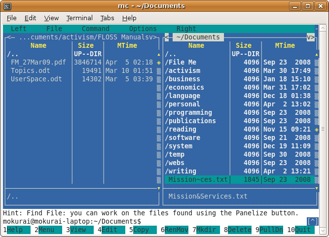
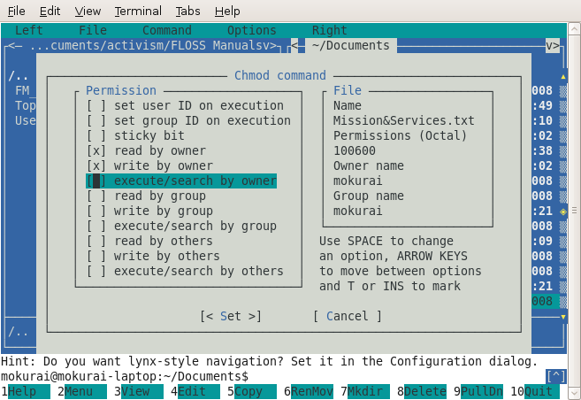

In each of the command examples in this chapter, the dollar sign ($) at the beginning of the line is a minimal GNU/Linux command prompt. (Your default prompt is usually more complex.)
The rest of the line is the command, with options and arguments. We use the following conventions.
-r or -R, for applying the command to every file in every subdirectory of the location where the command starts its work. Since these options can be and are used for other functions, you should check the documentation on any command where you want to use this capability.
A change that many people make is to put this command in their their startup file, .bashrc or .profile.
$ PATH=$PATH:.
This adds the current directory (.) to the path, so that you can execute your own private commands from one of your directories by changing to the directory and typing the command name. Without this, you have to type ./command to execute a command in the current directory. Some people consider this a security risk. Some prefer
$ PATH=~/bin:$PATH
so that they can execute scripts in a directory of their choosing that they own, and those scripts will take precedence over others of the same name. However they will not accidentally execute scripts randomly anywhere in the filesystem that they happen to be.
ls is the command to list filenames.
It can have options (Flags) added after the command with a minus sign "-".
Arguments (parameters) can also be added.
|
$ ls |
ordinary file listing |
|
$ ls | less |
pipe listing to less, which displays it a page at a time
|
|
$ ls > filelist |
redirect listing to file named "filelist" |
|
$ ls -l |
long file listing (file sizes, change times,..) |
|
$ ls -a |
include filenames starting with ".", normally not listed |
|
$ ls -l -a |
applies both the above options |
|
$ ls -la |
equivalent to the previous command |
|
$ ls *.fort |
list files called "ANYTHING.fort" |
|
$ ls -lat *.fort |
the t means list them in time order, not alphabetically |
These examples show the main points of all GNU/Linux commands. They are short, they take options, they take parameters, you can user several options together, you can chain commands together with pipes, you can redirect the output of a command to a file.
To list all files under a particular directory, use the -R option.
$ ls -R photos1 photos2 photos3 ./photos1: centraal_station.jpg nieuwe_kerk.jpg ./photos2: ica.jpeg sanders_theater.jpeg ./photos3: bayeux_cathedral.jpeg rouen_cathedral.jpeg travel.odtThe "R" stands for "recursive." Note that the recursive option is uppercase
-R in the ls command (-r is used to reverse the ordering the directory contents), but can be either uppercase or lowercase in the rm command.
Now that you know the basics of shell commands, use these often; you can learn almost anything you need from the ample (if terse) documentation they provide.
You can get a summary of almost any GNU/Linux command with the man command or the more recently developed info command. If the man command doesn't work, it is probably because your shell can't find the manual pages. This requires you to set the variable MANPATH to the correct directories. To find the directories that contain manual pages, try the following command. It means "print directories that have the name man":
$ find / -type d -name man -printManual pages follow a fairly rigid format. They start with a command synopsis, then list all the options and arguments to the command. Other sections that may be present include a short description; examples, overview, defaults, exit status, environment variables, and known bugs.
Info presents similar material, but often with more detail, and split into several pages with navigation links.
The apropos command tells you about man files that contain any keyword you specify, including man pages about topics other than commands. You would have a hard time guessing the names of some of these topics without help from apropos.
$ apropos -a samba password smbpasswd (5) - The Samba encrypted password file
GNU/Linux has directories to help you organize your files. pwd tells you your "current working directory" or CWD. In directory specifications, "." stands for the current directory, and ".." for the parent directory. Paths starting with "/" are absolute, with no dependence on the current directory. Paths starting without a "/" are relative to the current directory.
An example directory name would be /home/allen/handy/scripts. The full name starts with a slash "/" and directory names are separated by slashes. This differs from Windows, which uses the backslash "\", and Macintosh, which uses ":".
$ pwd /home/myname
Changes your CWD.
| $ cd | change to your "home directory" |
| $ cd .. | takes you to the parent directory, for example from
/usr/lib to /usr |
| $ cd Docs | change to documents directory in current directory,
if there is one (uses relative path) |
| $ cd /usr/lib | takes you to the dir "/usr/lib" from anywhere (uses absolute
path) |
| $ cd / | The root directory - there are none above this. |
Your "home directory" is the one you log in to. It is defined in the file /etc/passwd (unless some special network system is in use, in which case it is found in the output from ypcat passwd).
Make a directory.
$ mkdir mydirectory
Remove a directory.
$ rmdir mydirectory
If a file exists, this updates its modification date and time. If there is no such file, it is created with nothing in it.
$ touch newfile
This command removes files (and directories).
By default, you get no second chance, and once files are gone they are irretrievable. A nasty joke sometimes played on Newbies is to suggest "rm -r *" as the remedy for whatever problem they have. Don't try this unless you want to install a new operating system from scratch anyway, and you have a complete, current backup.
| $ rm filename(s) | |
| $ rm -r filename(s) | Remove directories and all their contents. |
| $ rm -i filename(s) | Prompt for a y/n choice before each file (recommended!) |
| $ rm -f filename(s) |
Do not complain if the file does not exist.
|
Make hard links or symbolic (aka "soft") links to files. Both hard links and soft links are references to other files. If you don't know what an "inode" is, stick with using soft links. (Even if you do know what an inode is, chances are good that you will use soft links the vast majority of the time).
A soft link is a special type of file that serves as an alias to another file (or directory) -- same basic concept as "desktop shortcuts" in Windows, where you have a shortcut icon on your desktop that points to a program, file, or folder that is located elsewhere on your computer. The file or directory that the link points to is called the "target" of the link.
When using ln, remember to include the -s option to choose soft type of link, and put the path to the target before the destination path for the new link.
To create a soft link named "linkname" pointing to a target named "file":
$ ln -s file linkname
To create links in the current directory (also known as ".") that point to files in ending in ".so" located in the ../lib directory, giving the soft links the same names as the original files:
$ ln -s ../lib/*.so .
This command copies files.
| $ cp file1 file2 |
Copies file1 over file2, if it exists.
|
| $ cp /etc /home/allen
|
Copies /etc to /home/allen/etc |
| $ cp -r mydir mynewdir |
With the -r flag, copies directories too
|
This moves and renames files and directories.
| $ mv file2 file3 | Renames a file or directory
|
| $ mv /home/allen/etc /tmp | Moves a file or directory |
This tells you your id name, for example, "allen"
So you can type
$ grep `whoami` /etc/passwd
to see your home directory and some other things.
allen:!:5037:1:P. Allan:/u/allen:/bin/csh
The grep command is used to search for strings in text files.
The backticks `` cause execution of the command inside. The result, in this case "allen", is substituted in the outer command, exactly as if the user had typed grep allen /etc/passwd.
The ! in the second field tells the computer that the encrypted password is held in another file. This makes it a bit harder for dishonest people to get hold of your password.
This should be one of the first commands you use when given a new id. It sets your password, and can do a few other things too. You will be prompted for the old password (if any) and will be asked for the new password twice. (length = 8 characters)
EXAMPLE
$ passwd Changing password for "allen" allen's Old password: allen's New password: Enter the new password again: $
There are restrictions on what you can choose, but they are in /etc/security and so not readable!
Good passwords are hard to guess, but also hard to remember. It is best to use all 8 characters and include at least one of [a-z], [A-Z] and [0-9]. There are programs around that guess many passwords, so it is unwise to use any passwords based on names, real words, the user id, the hostname, or other guessable strings.
This stops your session or just one window (if in a window). exit detects jobs that are paused (by Ctrl + z for instance) because they would die if you used exit. Type exit a second time if you are happy with that. Running background jobs continue.
When using a graphical interface, a menu accessed with the mouse can be used to end your whole session. Window managers are not built into GNU/Linux, and vary greatly.
Get a list of running processes. By default, ps lists only processes in the current shell. To get a list of all of your processes, use ps -e.
$ ps PID TTY TIME CMD 29477 pts/0 00:00:00 bash 29811 pts/0 00:00:00 ps
Terminate a running process without allowing it to complete. Particularly useful if a program has gotten into an infinite loop in which it does not receive or process keyboard input.
$ kill 29477
Kills the process with Process ID 29477. In the ps example above, this would be the current shell.
Every file has an owner and a group, as you can see with the ls command. You should have a group named the same as your account. The Change Owner command, chown, lets you set these ownership attributes for files that you have the right to write.
You can give an entire group permission to read, write, or execute files with one command. If you want to keep files private, set the group to consist only of you, and use chmod (below) to restrict access by others. The following assumes that, when your user account was created, a group just for you with the same name was created. This is true on many modern systems, but not on all.
$ chown user:user myfile
If you have imported some directories that came in with the wrong ownership, you can change them all with one command. Just cd to the top directory, and execute this command, with the appropriate user and group names. The -R option tells chown to go through every subdirectory, and the * wildcard tells it to change ownership of every file and directory it finds there.
$ chown -R user:group *
Every file and directory has a "filemode" consisting of a list of attributes.
You can see this with ls -l.
$ cd ; ls -la
The ";" separates two commands on the same line.
That shows you the modes of the files in your home directory.
Included in the list should be two entries called "." and "..", which refer to your current directory and its parent.
You will see a set of characters showing the file's permissions, followed by the owner (your ID, probably, for all except ..) and the group (perhaps "staff"), a file size, the time and date of the last change to the file, and the name. The listing will resemble the following:
total 312 drwxr-x--- 16 allen staff 1024 Oct 21 14:07 . drwxr-xr-x 21 sys sys 512 Oct 13 16:25 .. -rwxr----- 1 allen staff 896 Oct 20 14:44 .cshrc drwx------ 2 allen staff 512 Oct 6 08:51 .elm -rw-r--r-- 1 allen staff 59 Oct 17 13:59 .exrc -rwxr----- 1 allen staff 461 Oct 17 12:18 .login ...
A "d" in column 1 means the entry is a directory. A "-" means it is a file.
See the manual page for ls, under the -l option, for other possible file types.
There are 9 other characters in 3 sets of 3.
Columns 2-4 are for the file's OWNER. (named later on the line, "allen" in this case)
Columns 5-7 are for the file's GROUP. (named later on the line, "staff" in this case)
Columns 8-10 are for everyone else, except the superuser who always has all permissions.
See man ls under the -l flag for other possible modes. Notice that write permission on a directory allows you to remove files from that directory even if you do not own the files.
chmod 640 file1 # sets file1 to -rw-r----- chmod 755 file2 # sets file2 to -rwxr-xr-x chmod go= file3 # sets file3 to -???------- (removes group & other) chmod -R go-w $HOME # GOOD SAFE COMMAND: only you can write in your home dir
These commands allow you to look at text files.
$ more .bashrc $ less /etc/motd $ cat /etc/fstab
The more, less, and pg commands allow you to page through a file and search for strings. The less command ironically has somewhat more options than more.
When in a more, less, or pg session type the h key to see what commands you can use.
The cat command displays the entire file, so it is good only for files that fit on one or two screens. The original purpose of cat (catenate) is to join text files together, but it is extremely useful for displaying short individual files.
$ cat file1 file2 > file3
Find and display lines in one or more files. The earliest version, grep, is named after a common command form in an early line editor, Global Regular Expression Print, which searched through an entire file for text patterns and displayed the matching lines. Regular expressions, described in another section of this manual, provide methods for specifying text patterns. Options permit searching groups of files, including all subdirectories of the starting point. One of the most common uses of grep is to find lines in configuration and log files specific to one user or one program.
$ grep `whoami` /etc/passwd
looks for the result of the whoami command in the password file, returning the user's account information, though with the password obscured.
Disk Free. Show sizes of storage media, space used, and space available. Shows sizes in blocks (a size that varies from one filesystem to another) by default, so use the -h option to get sizes in "human-readable" form: K for thousands of bytes, M for millions of bytes, and G for billions of bytes.
$ df -h Filesystem Size Used Avail Use% Mounted on /dev/sda1 143G 41G 96G 30% / tmpfs 941M 0 941M 0% /lib/init/rw varrun 941M 380K 941M 1% /var/run varlock 941M 0 941M 0% /var/lock udev 941M 2.7M 939M 1% /dev tmpfs 941M 844K 940M 1% /dev/shm lrm 941M 2.4M 939M 1% /lib/modules/2.6.27-11-generic/volatile
Repeat after me, with substitutions if desired. Literal echoes are quite useful in scripts.
$ echo "Hello, world." Hello, world. $ echo $PATH /home/myname/bin:/usr/local/sbin:/usr/local/bin:/usr/sbin:/usr/bin:/sbin:/bin:/usr/games
This makes an attempt to recognize files, classifying them as English Text or executable or data.
type
$ file * | less
to see some examples.
|
XLF: |
ascii text |
|
doc: |
directory |
|
handy: |
directory |
|
groceries: |
ascii text |
|
.Xauthority: |
data or International Language text |
|
.cshrc: |
commands text |
|
.exrc: |
English text |
Differences between two text files. It also tells you whether two binary files differ.
$ diff .profile~ .profile 23a22 > scim -d &
This says that line 23 was added (in this case, to support typing in multiple languages and character sets), and shows the new contents of the line.
$ wc .login 6 7 461 .login
This .login file has 6 lines, 7 words, and 461 characters.
The program counts any string of printing characters between whitespace as a word, which can give strange results by human standards.
To list all files or directories named core under the current working directory:
$ find . -name core -ls
To remove all files named core under the current working directory (useful because programs create these files when they terminate through a programming error, but the files are of little value to you unless you possess and can read the source code):
$ find . -name core -exec rm {} \;
To list all files or directories named "something.core" under the current working directory:
$ find . -name '*.core' -ls
To name all directories called man under /usr:
$ find /usr -name man -type d -print
The next 2 examples are useful for removing temporary files you no longer want.
$ find /tmp /var/tmp -mtime +3 -type f -user allen -exec rm {} \;
$ find /var/preserve -mtime +8 -type f -user allen -exec rm {} \;
The next example names files and directories which either have changed in the last 2 days, or have execute permission for the owner.
$ find . \( -mtime -2 -o -perm -100 \) -printChecking what has changed during the last few days is a great way to find out why your computer isn't working any more!
Upload and download files using File Transfer Protocol. Use:
$ ftp hostname
to connect to the ftp archive at hostname. The FTP protocol specifies how to log in, navigate directories on the archive, upload and download files or groups of files, and much more. This summary gives you enough commands to navigate an archive and to download files (and upload them, if you have permission).
When you connect to a repository, you will see a > prompt where you can enter commands.
> binary
Set to binary mode, which passes every byte of the file unchanged. This should be the first command you give, unless you are absolutely certain that you will download only text files.
> ascii
Set to text mode, which converts line ends. This is the default when FTP starts. It is safe for text in ASCII, other 8-bit encodings, and Unicode UTF-8. Do not use for programs, images, music, and other binary files.
> dir
List files in the current directory on the remote host.
> cd directory-name
Change directory.
> cdup
Change to the parent directory of the current directory on the remote host.
> get remote-file [local-file]
Download a file and optionally rename it.
> put local-file [remote-file]
Upload a file and optionally rename it.
> bye
End the ftp session.
Download files from the Internet reliably, even over unreliable connections. If the connection goes down during a download, wget can resume from where it left off when the connection comes back up.
$ wget URL
will download the file at the URL to the current directory, using the same name. There are, as you would expect, numerous options.
The Tape Archive utility creates a single tar file containing the contents of one or more files, or extracts files from a tar file. Although originally designed to produce combinations of files for backup to tape, it is still the standard utility for packing together files so you can move them around as a unit. As an option, the files can be compressed in a tgz file.
$ tar -cf foo.tar foo/
Store contents of folder foo in foo.tar. The -c option creates a tar file. The -f option says to use the filename given. Without -f, the result would go to standard output. You can use this form in a pipeline to use a different compression method, such as bzip2, described below.
$ tar -cvfz foo.tgz foo/
Store compressed contents of folder foo in foo.tgz, and give moderately verbose output on the console as each file is processed. More verbose output is available with the vv option.
$ tar -xf foo.tar
Extract foo.tar in the current directory.
$ tar -xzf foo.tgz
Extract gzipped foo.tgz. The tgz extension is an abbreviation of the formerly common .tar.gz, used when combining files and compressing the result required piping the output of tar to the input of gzip.
The zip and bzip2 file compression algorithms are among the most popular of many ways to make files smaller (originally for transmission over slow modem connections), so that the inverse algorithms restore the full original files unchanged. Although the bzip2 method achieves better compression than zip, it also requires more processor time. For each one, we'll show a command for compression, decompression, and combining multiple files into one. The tar utility can use gzip compression.
$ gzip file
or
$ bzip2 file
compresses a file into an archive. The name of the archive file is the same as the original file, with the extension ".gz" or ".bz2" added.
$ gunzip file.gz
Decompress the file.gz archive to the original file.
The gunzip command is equivalent to gzip -d, where the -d option stands for "decompress". Similarly, bunzip2 is equivalent to bzip2 -d.
The zcat utility is equivalent to gunzip -c, where the -c option says to write the uncompressed results into a single file. This is frequently useful when a directory contains a number of compressed text files. For example,
$ zcat *.txt.gz
Combining the output into one file makes it easier to search. You could pipe the output of this command to grep, for example. Similarly, bzcat is equivalent to bzip2 -c.
The World-Wide Web is so widely used that some people think it is the entire Internet, but originally the Web was designed to use only text, and there are several text browsers for it still in use. Lynx (a pun on "links") remains popular among those who spend more time at the command line or inside Emacs than in a GUI.
A text browser can simply ignore any material marked with HTML tags that refer to graphical content, or can display the ALT text that is often supplied with images, both for the sake of text browsers and for the blind and visually impaired.
$ lynx url
starts Lynx. If you specify a URL, Lynx will start with that page. Otherwise, it will go to its current default home page, which you can set to point wherever you like.
The following table gives you enough commands to use Lynx, but there are many more.
| ? | Help
|
| K | List commands
|
| + | Scroll down one screen
|
| - | Scroll up one screen
|
| ↓ | Next link
|
| ↑ | Previous link
|
| Return or →
|
Follow link
|
| ← | Back |
| a | Add current link as bookmark
|
| d | Download current link to file
|
| g | Go to URL
|
| o | Set options
|
| p | |
| s | Search |
| v | View bookmarks
|
| q | Quit Lynx.
|
The Midnight Commander (mc) is based on concepts from the Norton Commander for PCDOS, which provides a two-pane file browser, and puts many DOS commands on function keys and menus. For GNU/Linux, of course, mc offers GNU/Linux commands in a text terminal window. The command to start it is, of course, mc.
$ mc
The screen shot below shows a typical display in Midnight Commnander. You will have a different directory structure and different files.

You can navigate using either the mouse or the keyboard. Tab moves you to the other panel. The Insert key highlights files and directories for actions such as copy, rename, move, and delete, which you can see on the function key buttons, or for various commands on the pull-down menus.
The Left and Right menus let you change views to give different information, to enter a regular expression that determines which files to display, or to sort in a different order, among other things. You can invoke FTP from either of these menus, and use Midnight Commander's file commands to upload and download files. The File menu includes commands such as chmod and chown, with a visual dialog for selecting options and on-screen help, as shown in the screenshot below.

The Commander provides hints, as in the screenshot above, to alert you to useful functions that you might not discover on your own. This one is particularly useful. Setting this configuration option lets you use the left and right arrow keys to navigate between directories, in the same way that Lynx lets you navigate URLs. There are a great many more configuration options available.
You can set and access bookmarks on a Directory Hotlist within your file system using the Ctrl + \ key combination, or by selecting the list on the Commands menu. The dialog lets you create and navigate between named bookmark lists.
There is a great deal more to Midnight Commander, of course. You can learn about other functions in the Help dialog (F1).
There is a wide choice of text editors to serve a variety of needs. One of the most venerable is Emacs (originally Editing Macros; jocularly Escape, Meta, Alt, Control, Shift, for its profusion of keyboard commands), written in LISP, with the ability to add commands in LISP, and to change any key bindings for commands. It includes the ability to run external commands, including mail and news (Usenet) readers and compilers, so some users do everything from emacs. Some prefer vi (visual editor), which has a similar ability to add commands and change key bindings, but does not replace the command line for its users. Others still, including most of those who do not program for a living, prefer simpler editors such as nano and pico.
In each case, one can invoke an editor and have it load up a file ready to edit in the form
$ editor filename
Consult specific program documentation for other command-line options and for editing commands and the rest. For example,
http://www.gnu.org/software/emacs/
http://www.ccsf.edu/Pub/Fac/vi.html
http://www.itd.umich.edu/itcsdocs/r1168/
This adds titles and page numbers to your text files.
$ pr /etc/sendmail.cf | less
Keep pressing enter to watch the file go past slowly. You can also use Page Up and Page Down keys, and arrow keys.
prints a file. Useful for plain text, and can print some other formats (notably PostScript and PDF) if the system has printer drivers that understand those formats.
$ lpr .profile
Suppose you have a 600MB ISO file you'd like to split into several pieces for easier storage. You can do so with:
$ split -b 200m image.iso image_iso_
This example generates three files named image.iso_aa, image.iso_ab, and image.iso_ac, each 200MB in size. If you want to join them again, use the command:
$ cat image.iso_* > new-image.iso
Remember, the more you practice, the easier and more efficient you can work. Experiment with these commands --the only way to get better at using them is practice!
There has been error in communication with Booktype server. Not sure right now where is the problem.
You should refresh this page.